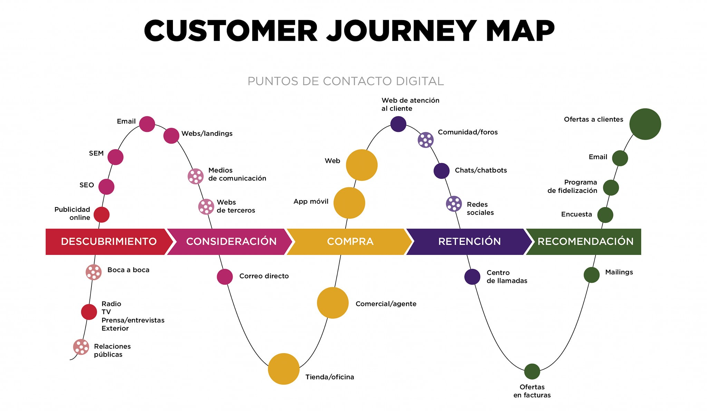
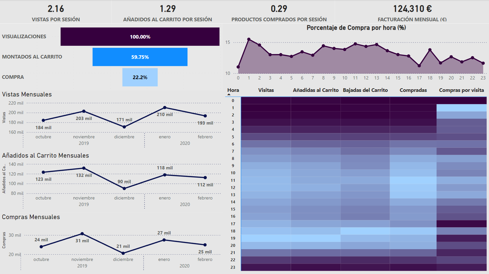
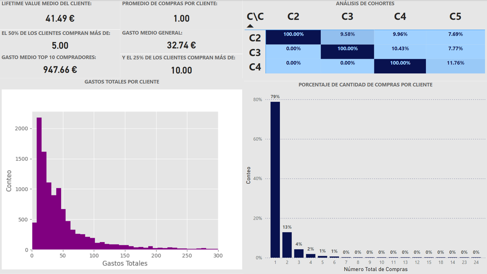
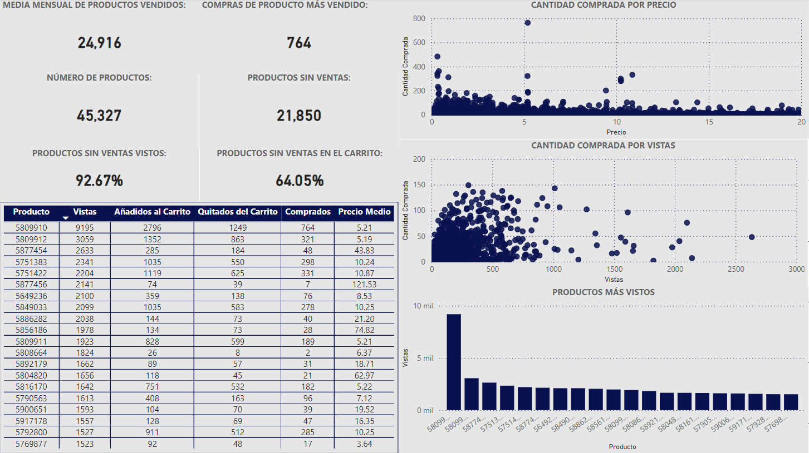

EVALUACIÓN DE PROCESOS EN ECOMMERCE
Un negocio ruso, dedicado a la venta de productos cosmésticos en línea (Ecommerce), presenta inquietud al
ver que el margen de crecimiento de su marca se encuentra estancado y no termina de despegar.
Por tal motivo, se le propone al equipo de análisis implementar estrategias de CRO
(Conversion Rate Optimization - Tasa de Conversión) personalizadas que incrementen la visibilidad y
relevancia de la empresa, a partir del estudio de los datos transaccionales de los últimos meses.
OBJETIVO DE ANÁLISIS
Se busca analizar los datos transaccionales de la empresa con el objetivo de identificar posibles acciones de CRO que permitan aumentar el valor de las interacciones (Visitas - Conversiones - Ticket Medio) de los usuarios dentro del ecommerce.
CONCEPTOS PREVIOS
En un primer apartado se ilustra el modelo por el cual funciona el proceso de captación y
retención de clientes, denominado como Customer Jouney.(Imagen Tomada de Mercadotecnia Total).

Como se puede observar, existen cinco (5) grandes etapas que todo potencial cliente experimenta al
momento de cruzarse con un nuevo producto, todas estas etapas se componen de procesos más pequeños, los
cuales representan las mayores ventanas de oportunidad de captación para las empresas prestadoras
del bien o servicio.
- Descubrimiento: Principalmente se da por campañas publicitarias, como las ofrecidas por Facebook o Google Ads, pero también se puede establecer por recomendación hablada (boca a boca).
- Consideración: Luego de conocer una nueva marca, esta entra en el juego de valoración del cliente, donde es tenida en cuenta junto a otros proveedores al momento de requerir cierto producto relacionado con lo ofrecido (Redes Sociales - Correos - Medios de Comunicación).
- Compra: El cliente ha elegido la nueva marca para realizar la comprar del producto (Tienda física - Portal Web - Asesor en línea).
- Retención: Es el paso dado después de la primera compra, donde la empresa proveedora incita al cliente no solo a quedarse sino a comprar otros productos con ellos (Servicio al cliente - Calidad del Producto - Otros productos).
- Recomendación: Finalmente al tener el cliente ya establecido, se busca que este expanda la marca a sus diferentes espacios, como lo son su grupo de amigos, familiares, negocios, entre otros (Ofertas - Programa de Fidelización - Satisfacción General).
INDICADORES (KPI's)
Para efectos del análisis y resolución de objetivos, dentro del ecommerce se hará un enfoque a las siguientes palancas:
- Captación (Customer Journey) del negocio, identificando los aspectos a optimizar dentro del mismo.
- Clientes, donde se busca personalizar las campañas a lo realmente importante para los usuarios.
- Productos, efectuando un modelo que priorice la visibilidad de los productos cotizados en el mercado.
Las palancas definidas serán evaluadas realizando seguimiento a estos indicadores:
- Visitas: Cuando un usuario abre la pagina de un producto
- Conversión: El número de compras de un producto en relación a su número de visitas.
- Frecuencia de Compra: Cada cuanto tiempo un cliente realiza compra en la tienda.
- Ticket Medio: Es el valor de compra promedio que se tiene por sesión.
- Tasa Abandono carrito: Cada cuanto un cliente se retracta de comprar un producto.
- Lifetime Value (LTV): Las compras totales de un cliente desde la captación hasta su última compra.
El análisis de este Ecommerce se llevará a cabo por sesión, que vendría a hacer ese conjunto de acciones (eventos) que un usuario realiza al momento de entrar a la página web del negocio.
CONCLUSIONES EJECUTIVAS
- VISUALIZACIONES:
- Se observan horas donde los usuarios tienden a ejecutar mayores acciones de compra.
- El periodo de mayor visibilidad se da en noviembre, en la semana de Black Friday.
- CONVERSIÓN:
- Casi la mitad de los productos (21850 - 48.20%) no han tenido ventas dentro del periodo de análisis.
- VENTA CRUZADA:
- El punto medio de compras incluye 5 articulos.
- FRECUENCIA DE COMPRA:
- El 79% de los clientes sólo realiza una compra durante los meses analizados.
- El 90% de los clientes nuevos no vuelven a realizar una compra en los meses posteriores a su primera compra.
- El LTV medio es de 42€
- FIDELIZACIÓN DE CLIENTES:
- Existe clientes con un gasto medio mucho mayor (10 veces mayor) a la media general.
POR SESIÓN:
- Los usuarios ven una media de 2.2 productos
- Los usuarios añaden al carrito 1.3 productos
- Los usuarios eliminan del carrito 0.9 productos
- Los usuarios compran 0.3 productos
- El 60% de los productos visitados son añadidos al carrito, sin embargo solo el 13% terminan en compra
- El ecommerce presenta una facturación mensual de 125.000€
DETALLE DE RESULTADOS
ESTADO GENERAL
En primera instancia, se establecio las condiciones actuales en las que se encuentra el negocio, esto a partir del análisis de sus componentes a nivel diario, mensual y general, pudiendo evideciar las siguientes particularidades:
- A nivel de sesión se logra ver que los usuarios observan 2 productos, pero solo compran el 29% de las veces que entran en línea.
- A nivel de día se aprecía que los clientes tienen definidas las horas de la mañana (8:00am-1:00pm) y luego del trabajo (6:00pm-8:00pm) como horas predilectas de compra (Componentes más claras - Cuadro de calor). Sin embargo, existe una particularidad, y es que la hora donde hay un mayor nivel de compra por visita se presenta a la 1 de la madrugada.
- La Facturación Promedio Mensual del periodo de análisis se encuentra en los 124.310€, donde no se alcanza a visualizar un margen de crecimiento real. Se resalta en el mes de diciembre, el cual usualmente es considerado un mes de bastante movimiento, pero para este caso, las ventas se desplomaron en un 18%, este suceso puede deberse a los eventos de Black Friday ocurridos en noviembre, que curiosamente fue el mes de mayor rentabilidad para la Ecommerce.
- A nivel general se contempla que en el 59.75% de las visitas, los usuarios añaden el producto al carrito, esto representa un enganche inicial al usuario muy bueno, no obstante, no se logra retener ese enganche en los usuarios, ya que el 22.2% de los productos añadidos al carrito son los que realmente se terminan comprando.
CUADRO 1. CONDICIONES GENERALES DEL ECOMMERCE.

ANÁLISIS POR CLIENTES
Luego de conocer las condiciones actuales de negocio se establecio la importancia de entender a los clientes, por lo que se decide enfocar el estudio en torno a ellos, donde se buscó determinar el gasto que ejercen en la tienda, el número de productos que compran, la periodicidad con la que compran entre otros aspectos importantes, pudiendo reconocer que:
- La empresa presenta una gran volatilidad en su mercado, puesto que los clientes por lo general no son reiterativos. El 79% de los clientes solo estan realizando una compra dentro del periodo de análisis.
- Los clientes en la compra que ejecutan regularmente esta añadiendo cinco (5) productos donde destinan un montón de 32.74€. Se destaca que aunque la media se encuentra en 5 productos, el 25% de los clientes tienden a comprar 10 productos o más.
- En la labor de medir en nivel de éxito de la Ecommerce para retener sus nuevos clientes, se procedio a realizar un
análisis de cohortes, el cual consiste en verificar la tasa de clientes nuevos que vuelven a comprar
en los meses posteriores a su primera compra.
Los resultados muestran que el 90% de los clientes nuevos no vuelven a realizar una compra en los meses posteriores. - El Lifetime Value (LTV) medio de los clientes es de 41.49€, muy cercano a lo que vendría a reportar una compra promedio de un cliente.
- A pesar de existir un claro defecto en los procesos de retención de clientes, dentro de los meses de análisis
se pudo encontrar una base de clientes comprometidos, que realizan compran de manera recurrente y en
cantidad.
Estos clientes por lo general realizan tres compras, donde por lo general añaden ciento noventa y dos (192) productos, con un gasto medio de 947.66€.
Estos clientes se muestran fundamentales para el negocio, por lo que es prioritario generar campañas de fidelización personalizadas.
CUADRO 2. COMPORTAMIENTO DE LOS CLIENTES.

ANÁLISIS POR PRODUCTOS
Finalmente se estudio el comportamiento de los productos, donde se buscó definir aspectos del catálogo actual, como la media mensual de ventas, los productos más vistos, la tasa de productos comprados, y otros componentes adicionales, pudiendo ver que:
- En el periodo de análisis la Ecommerce logró un total de 127564 ventas, con una media mensual de ventas de 24916, el producto más vendido fue el de la referencia 5809910 con un total de ventas de 764.
- Actualmente el catálogo presenta una variedad de 45327 productos, los cuales manejan un radio de costos desde los 0.05€ céntimos hasta los 326.18€. Aunque el catálogo se muestra nutrido en cantidad esto no es reflejado a nivel de compras, puesto a que actualmente el 48.20% (21850) de los productos no han tenido ventas, sin embargo estos mismos son vistos y añadidos al carrito en un 92.67% y 64.05% respectivamente, por lo que existe un interes de compra, incluso en los articulos no vendidos.
- La relación de compras a nivel de precio es claramente decreciente, se observa que los productos que acaparan el mayor número de compras (90%) no superan los 16€.
- La relación de compras respecto al número de vistas maneja un poco de linealidad, se aprecia que los productos más vistos son los más comprados, no obstante esta relación no se observa en todos los casos, por lo que es pertinente delimitar los patrones determinantes para que un producto visto sea comprado.
CUADRO 3. ANÁLISIS POR PRODUCTO.

RECOMENDACIONES
El estudio muestra un clara tendencia plana, en todas las métricas. Esto deja en evidencia la clara necesidad
por ejercer acciones de CRO.
El análisis realizado sobre los datos transaccionales permite establecer un plan CRO que interviene en todas las
5 grandes palancas de negocio, con una alta probabilidad de incrementar las condiciones actuales del Ecommerce.
- VISUALIZACIONES:
- Restructurar las campañas de pago (Generación - Retargeting) en la franja horaria de la mañana y luego del trabajo.
- Priorizar la inversión de fin de año para el período del Black Friday.
- Ajustar la inversión de captación CPA con base a LTV medio encontrado.
- CONVERSIÓN:
- Configurar la pantalla de inicio para que muestre los productos más vistos y más vendidos.
- Ejercer acciones sobre los productos vistos pero no comprados.
- Ejercer acciones sobre los productos añadidos al carrito pero no comprados
- VENTA CRUZADA:
- Aplicar estrategias de recomendación en tiempo real.
- FRECUENCIA DE COMPRA:
- Realizar campañas promocionales a partir de los resultados encontrados en la segmentación RFM.
- Crear Newsletter que ilustre los productos más vendidos y de interes, personalizado a nivel de usuario.
- FIDELIZACIÓN DE CLIENTES:
- Crear programa de fidelización enfocado a retener los clientes importantes.
Disclaimer: El proyecto utiliza datos obtenidos del medio, sin embargo este fue realizado con fines educativo y no debe ser tenido en cuenta para un cuadro de decisión real.